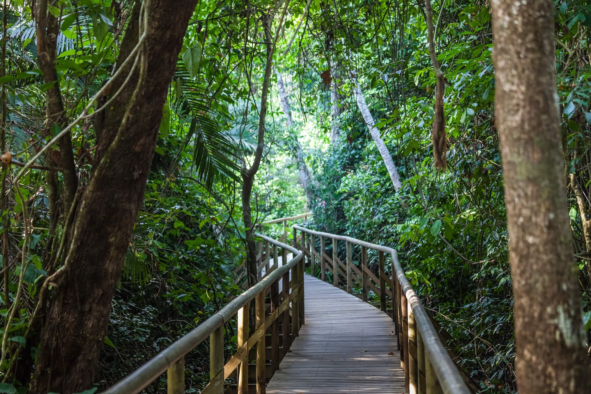
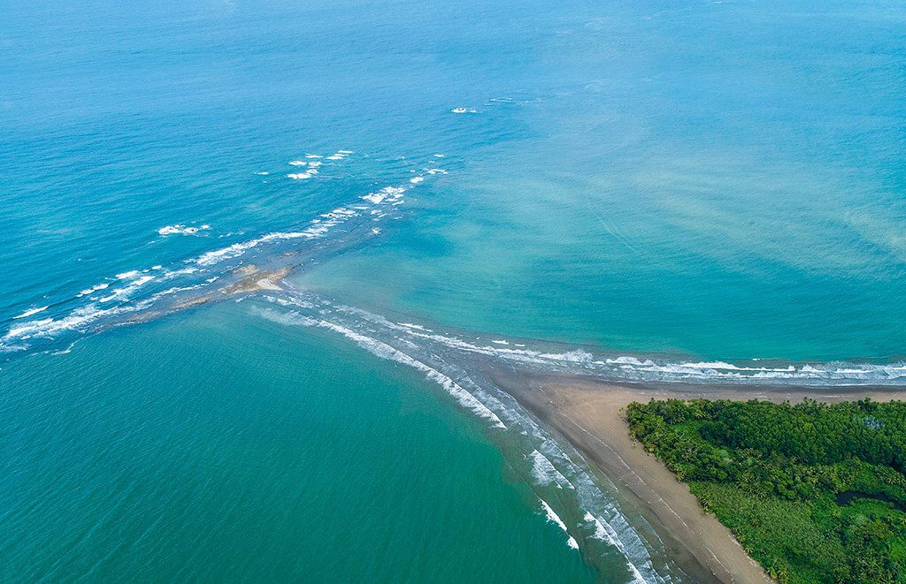
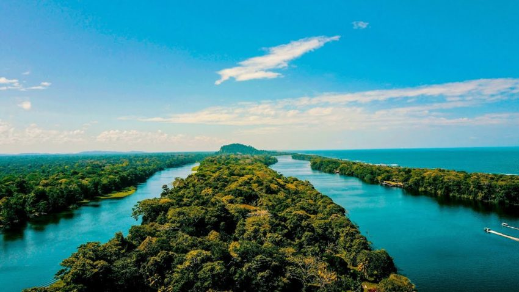
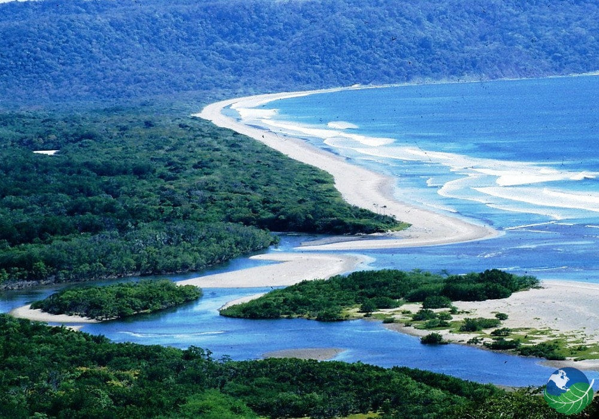
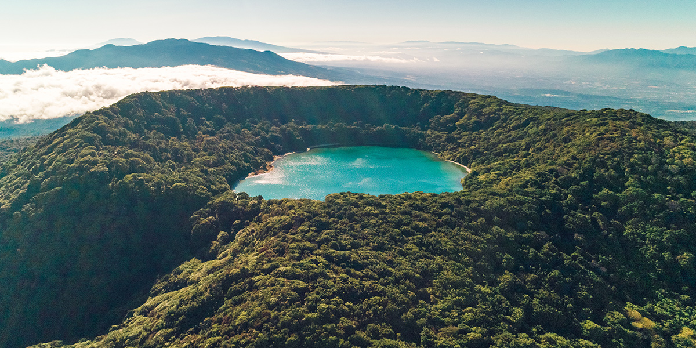

Parques Nacionales:
| Imagen | Nombre | Horario | Mas informacion |
|---|---|---|---|
|  | Parque Nacional Manuel Antonio | El Parque Nacional Manuel Antonio, se encuentra abierto a los visitantes de miércoles a lunes en horario de 7:00 a.m. a 3:00 p.m. (martes cerrado) | Link |
|  | Parque Nacional Marino Ballena | Sector Uvita 7:00 am a 6:00 pm. (Abierto todos los días) Sector Colonia 7:00 am a 6:00 pm. (Abierto todos los días) Sector Ballena 8:00 am a 4:00 pm. (Abierto todos los días) Sector Piñuela (cerrado temporalmente). |
Link |
|  | Parque Nacional Tortuguero | Todos los días de 6 am 12 md y de 1 pm a 4 pm. | Link |
|  | Parque Nacional Santa Rosa | Miércoles a lunes de 8:00 am a 3:30 pm (previa reservación) este varia en la épocas de alta visitación donde se pueden atender desde 8:00 am hasta las 5:00 pm. Museo Histórico La Casona de Santa Rosa, de miércoles a lunes 8 am a 3:30 pm. |
Link |
|  | Parque Nacional Volcan Poas | Todos los días de 8 a.m. a 4 p.m. Incluyendo feriados. Solamente mediante el sistema de reservaciones. | Link |